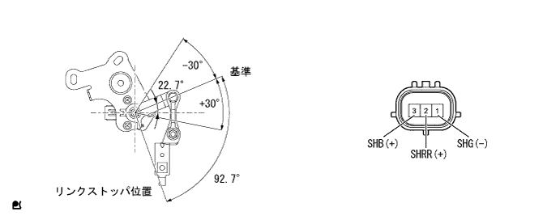

Height Control Sensor Sub-assembly Rear Inspection |
| 1. Inspect Height Control Sensor Sub-assembly Rear (Drive Type FF) |
Pre-inspection Preparation
Connect 3 dry cell batteries (1.5 V) in series.
Connect the battery positive (+) to terminal 3 (SHB) and the battery negative (-) to terminal 1 (SHG) of the connector, and apply 4.5 V between terminals 3 (SHB) - 1 (SHG).

Measure the voltage.
Using SST (Toyota electrical tester), with voltage applied, measure the voltage between the terminals while slowly moving the link up and down.
| Tester Connection (Terminal Symbol) | Link Angle (Vehicle Height) | Standard |
|---|---|---|
| 2(SHRR) - 1(SHG) | +30° (High) | Approx. 3.45 V |
| 0° (Standard) | Approx. 2.25 V | |
| -30° (Low) | Approx. 1.05 V |
| 2. Inspect Height Control Sensor Sub-assembly Rear (Drive Type 4WD) |
Pre-inspection Preparation
Connect 3 dry cell batteries (1.5 V) in series.
Connect the battery positive (+) to terminal 3 (SHB) and the battery negative (-) to terminal 1 (SHG) of the connector, and apply 4.5 V between terminals 3 (SHB) - 1 (SHG).

Measure the voltage.
Using SST (Toyota electrical tester), with voltage applied, measure the voltage between the terminals while slowly moving the link up and down.
| Tester Connection (Terminal Symbol) | Link Angle (Vehicle Height) | Standard |
|---|---|---|
| 2(SHRR) - 1(SHG) | +45° (High) | Approx. 4.05 V |
| 0° (Standard) | Approx. 2.25 V | |
| -45° (Low) | Approx. 0.45 V |